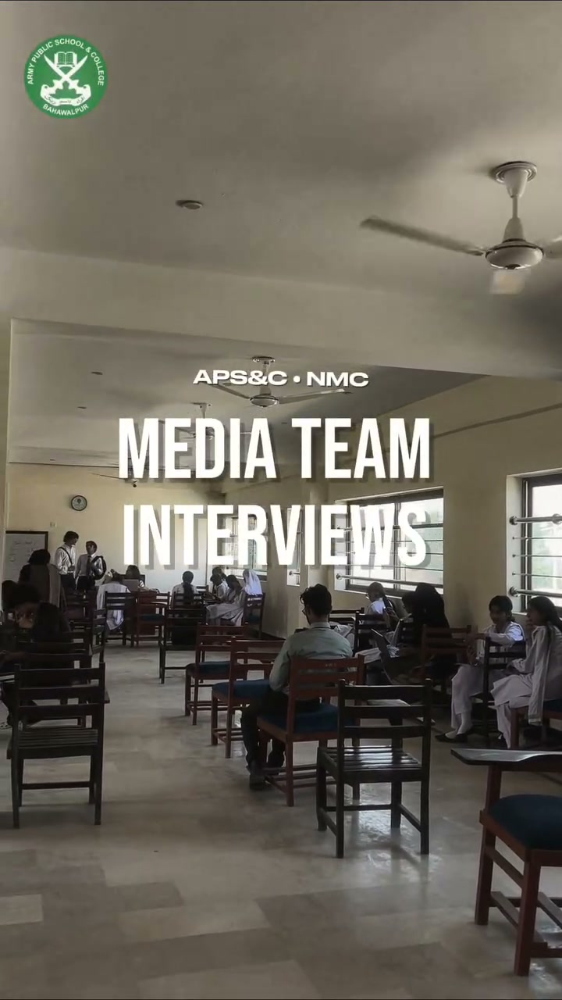

Cinematographer and video editor specializing in hook-driven short-form retention, documentary-style long-form editing, and high-fidelity DaVinci Resolve color grading.

Engineered for hook retention, kinetic rhythm, and psychological engagement across modern vertical screens.
Horizontal event anthems, stage ceremonies, debate championships, and campus documentaries produced alongside the vertical reels.
A comprehensive breakdown of how pacing restructuring, custom sound foley, and thumbnail psychology drove 2,600% organic growth.
From high-retention short-form reels to multi-cam event aftermovies, cinematic teasers, and widescreen brand documentaries.
Whether you're scaling a YouTube channel, need high-converting short-form reels, or desire full-scale cinematic production — let's build your visual presence together.